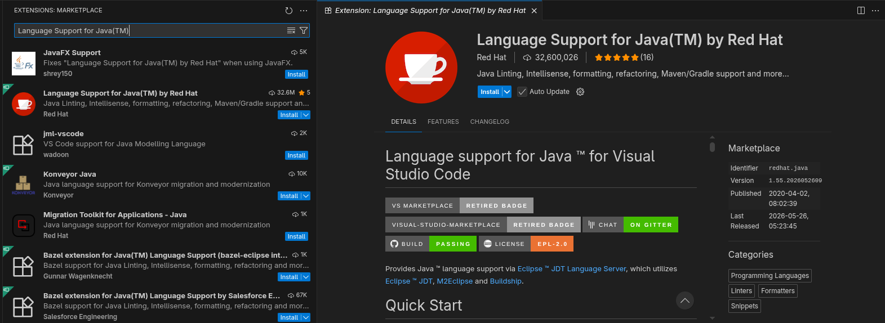
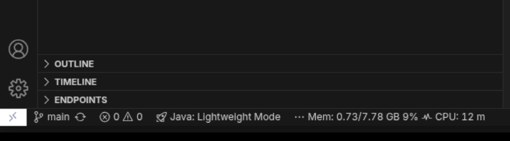
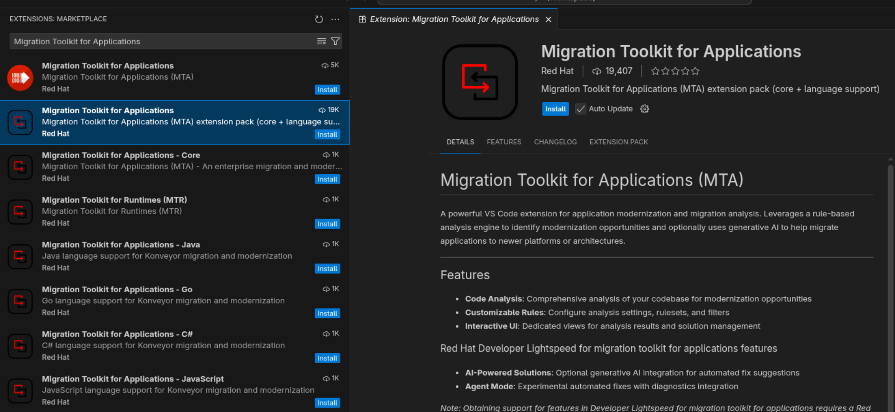
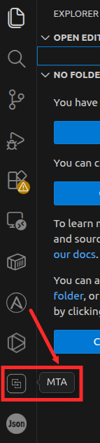
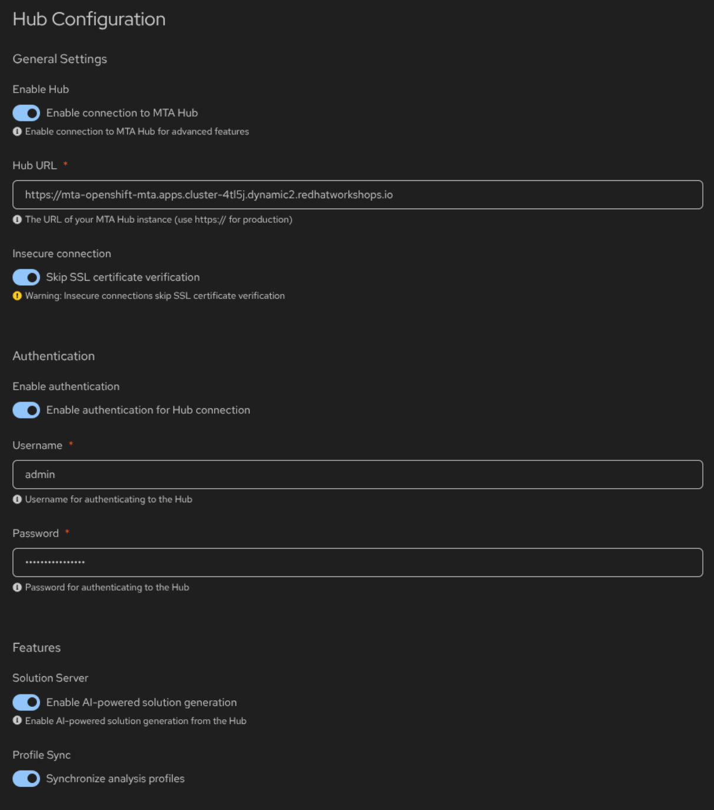
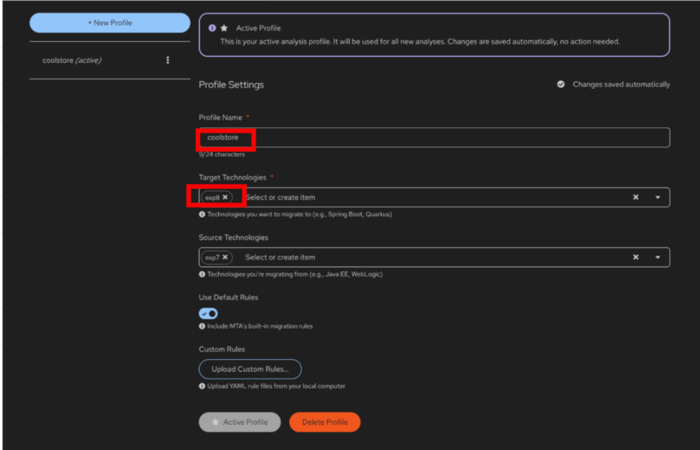
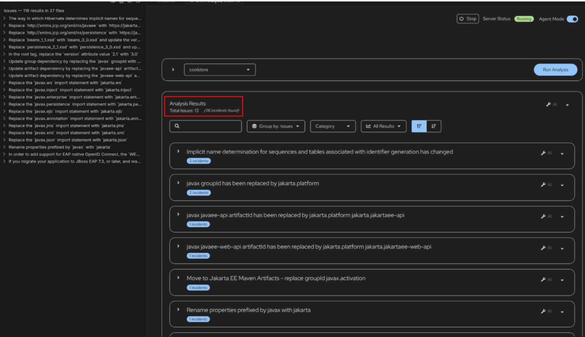

Lab 2: Migrate Application with Developer Lightspeed
Overview
Red Hat Developer Lightspeed brings generative AI capabilities directly into your development environment, helping you understand migration patterns, generate code snippets, and receive context-aware recommendations as you modernize the Coolstore application.
In the previous lab, you analyzed Coolstore in the MTA web console. In this module, you configure the Migration Toolkit for Applications extension in OpenShift Dev Spaces, connect it to the MTA Hub, and use Agent Mode to apply AI-assisted migration changes from EAP 7 to EAP 8.
Learning objectives
By the end of this module, you’ll be able to:
-
Install and configure the Migration Toolkit for Applications extension in OpenShift Dev Spaces
-
Connect the MTA extension to the MTA Hub deployed in the previous lab
-
Create an analysis profile and run Agent Mode analysis on the Coolstore application
-
Apply AI-assisted code changes with Developer Lightspeed to migrate from EAP 7 to EAP 8
Install the MTA extension in Dev Spaces
The Coolstore application needs to be migrated from EAP 7 to EAP 8. You’ll start by installing the MTA extension in your Dev Spaces workspace to bring migration analysis and AI-assisted remediation directly into the IDE.
Access your Dev Spaces workspace
-
Open the OpenShift Dev Spaces console:
https://devspaces.{openshift_cluster_ingress_domain} -
Log in with your OpenShift credentials if prompted
-
Open your existing
coolstoreworkspaceIf you don’t have a workspace yet, create one from the GitLab repository: {gitlab_url}/mta-apps/coolstore.git
Install the Language Support for Java extension
-
From the lower-left corner, select the Settings (gear) icon, and then choose Extensions to open the Extensions Marketplace.

-
In the Extensions search bar, search for Language Support for Java(TM) and install the extension.

Switch Java Language Server to Standard Mode
-
From the Status Bar, click the Java Language Server icon.

-
Once you click, the code will be compiled and the status should show "Java: Ready"
Install the MTA extension
-
From the lower-left corner, select the Settings (gear) icon, and then choose Extensions to open the Extensions Marketplace.
-
In the Extensions search bar, search for Migration Toolkit for Applications (MTA) and install the extension.

You may see 2 Migration Toolkit for Applications extensions. Ensure it is the one listed above in the screen shot with the new logo.
-
Once the installation is complete, verify that the MTA extension icon appears in the left-hand Activity Bar. Select this icon to open the MTA analysis view.

-
You should see the MTA Analysis view with options to:
-
Open Analysis Panel
-
Manage Profiles

-
Configure the MTA Extension
-
Open the Analysis Panel by clicking btn:[Open Analysis Panel]

-
From the top-right corner of the Visual Studio Code window, select the Settings option to access the MTA configuration panel.

-
Click btn:[Configure Hub Settings] under Hub Configuration

-
In the settings screen, fill in the details:
-
Enable Hub: Checked
-
Hub URL:
https://mta-openshift-mta.{openshift_cluster_ingress_domain} -
Insecure connection: Checked
-
Enable authentication: Checked
-
Username:
{user} -
Password:
{password} -
Solution Server: Enabled
-
Profile Sync: Enabled
-
-
Click btn:[Save]

-
Close MTA Hub Configuration tab and open the MTA Analysis Panel tab.
-
If you see the message "No profiles found", click Manage Profiles to create a new profile.
-
Click btn:[New Profile]
-
Fill in the details:
-
Profile Name:
coolstore -
Target Technologies: Select
eap8 -
Source Technologies: Select
eap7 -
Use Default Rules: Checked

-
Analyze the Application
-
Return to the MTA Analysis View, confirm that Agent Mode is enabled, and select Start to activate the newly created profile.

-
Select Run Analysis to begin the application analysis. MTA, in combination with Developer Lightspeed and the configured GenAI model, analyzes the entire source codebase. Wait until the analysis reaches 100% completion.
-
Review the analysis results, which highlight reported issues and provide guided recommendations for migrating the application from EAP 7 to EAP 8.

-
Click through the analysis results and review the recommendations for migrating the application from EAP 7 to EAP 8.
-
Select the
javax groupId has been replaced by jakarta.platformreported issue and follow the accompanying Arcade video, which demonstrates how Developer Lightspeed proposes code changes directly within the source files. -
As suggestions appear, accept or reject each change. Developer Lightspeed refines its recommendations based on your selections and may propose additional updates as needed.
Applying recommended changes can introduce additional impacts in other parts of the codebase. By using the Agent Mode option, Developer Lightspeed is able to identify and suggest these follow-on changes. Without Agent Mode enabled, such dependent updates may not be detected or reflected.
-
Repeat the analysis process and observe how the total number of reported issues decreases as the first issue is resolved, and note how the analysis results are updated accordingly to reflect the applied changes.
-
Go to the terminal and run the following:
./mvn clean package-
Verify the code compiles successfully
There could be AI-introduced errors in the
pom.xmlfile. A separate repository has been created that contains the fully migrated code. You may refer to the following migrated repository for comparison and verification, or to correct your implementation if required. {gitlab_url}/mta-apps/coolstore-migrated.git -
The accepted solutions are captured in the Solution Server of the MTA Hub and will be used to generate code changes for future applications. This is a powerful feature that allows you to reuse the same solutions for multiple applications.
-
Once the analysis is complete, all issues are resolved, and
./mvn clean packagesucceeds, you have completed the migration exercise for this lab.
Summary
You have:
-
Installed the MTA extension in your Dev Spaces workspace
-
Configured the MTA extension to use the MTA Hub
-
Created a new profile for the Coolstore application
-
Analyzed the Coolstore application using the MTA extension
-
Migrated the Coolstore application to EAP 8 and verified the build